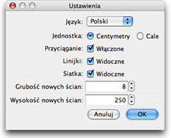

|
Aby zmienić opcje Sweet Home 3D wybierz Sweet
Home 3D > Ustawienia... on Mac OS X or Plik
> Ustawienia... w innych systemach.

W panelu ustawień możesz dokonać zmiany języka, w którym komunikujesz się z programem oraz jednostki używanej w trakcie rysowania planu domu, prowadnic, siatki czy też wyświetlania długości.
Pole wyboru Przyciąganie włącza bądź wyłącza przyciąganie wykorzystywane w trakcie rysowania ścian i ustawiania mebli.
Pole wyboru Linijki pozwala wyświetlić lub ukryć linijki na krawędziach planu.
Pole wyboru Siatka pozwala wyświetlić lub ukryć siatkę lini pomocniczych na planie..
Wartość Grubość Nowych Ścian pozwala określić jaką grubość będą domyślnie miały wszystkie ściany utworzone po zamknięciu okna ustawień. Podobnie wartość Wysokość Nowych Ścian pozwala określić jaką wysokość będą miały wszyskie nowotworzone ściany na planie.
|